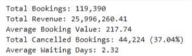
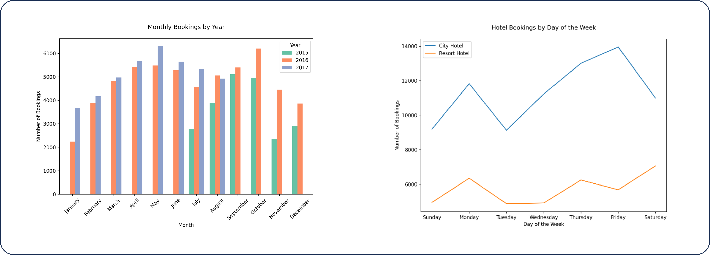
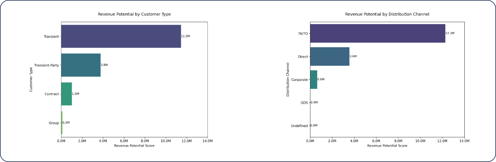
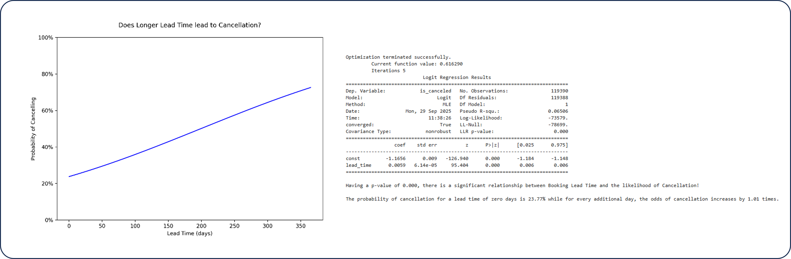

Explores booking patterns, cancellation rates, and seasonal
trends to improve occupancy forecasting.
Overview
This end-to-end Python data analysis project investigates over 119,000 hotel booking records across a city hotel and a resort hotel, spanning July 2015 to August 2017. The analysis was structured around three high-impact business questions: how seasonality shapes demand, which customer segments maximize revenue potential, and what factors statistically predict booking cancellations. Delivered as a professional business report, it bridges the gap between raw booking data and actionable revenue management strategy.

Business Question
With a cancellation rate of 37.04% (44,224 out of 119,390 bookings) and $25.99M in total revenue at stake, hotel operators needed to understand not just what was happening in their bookings data — but why. Without insight into the behavioral and operational drivers of cancellations, revenue leakage goes unaddressed and pricing strategies remain reactive. This analysis was designed to quantify those drivers, segment customers by revenue reliability, and give hotel managers a data-grounded framework for reducing cancellation risk and optimizing yield.
Key Insights & Features
- Core Metrics Analyzed 
-
Total Bookings (119,390), Total Revenue ($26.00M), Average Booking Value ($217.74), Cancellation Rate (37.04%), and Average Waiting Days (2.32) — establishing a full operational baseline before diving into root-cause analysis.
- Seasonality & Demand Patterns 
-
Monthly booking trend charts reveal peak demand between April and August (May as the single highest month) and a sharp year-end decline — with City Hotels peaking on Fridays for business travel and Resort Hotels spiking on weekends for leisure, confirming distinct demand profiles requiring differentiated pricing strategies.
- Revenue Potential Segmentation 
-
A custom Revenue Potential score (Average Revenue × Booking Volume × Cancellation Rate) ranks customer types, market segments, and distribution channels — identifying Transient guests ($11.5M potential) and OTA/TA/TO channels ($12.3M combined) as volume leaders, while Contract customers are flagged as the highest revenue-per-booking and most stable segment.
- Cancellation Predictor Modeling 
-
Logistic regression models with ANOVA validation quantify the statistical significance of five cancellation drivers: lead time (odds increase 1.01× per day), previous cancellations (odds multiply 7.85× per prior cancellation), ADR (odds increase 100.21× per 100-unit rate increase), special requests (odds reduce to 0.48× per request), and repeat guest status (14.49% cancellation rate vs. 37.79% for non-repeat guests).
- Visualizations Produced
-
100% area charts for cancellation vs. non-cancellation distributions across all predictor variables, stacked bar charts for repeat guest loyalty comparison, monthly clustered bar charts for year-over-year demand, and horizontal bar charts for revenue potential by segment — all produced in Python with matplotlib and seaborn.
- Analytical Approach
-
Multi-layered — descriptive (demand and revenue patterns), diagnostic (cancellation driver identification via EDA), and predictive (logistic regression models with odds ratios and probability curves for each significant variable).
| Tool | Usage |
|---|---|
| Python | End-to-end analysis environment |
| pandas & numpy | Data loading, cleaning, feature engineering |
| matplotlib & seaborn | EDA visualizations - area charts, bar charts, etc. |
| scipy & statsmodels ANOVA testing, logistic regressions modeling | Source data preparation |
| Jupyter Notebook | Structured analytical workflow |
Impact & Value
This project demonstrates the full analyst workflow — from raw data cleaning and feature engineering through to statistical modeling and business recommendation — entirely in Python, without reliance on BI tools. The logistic regression findings translate directly into operational policy: requiring deposits for bookings with lead times over a threshold, flagging guests with prior cancellation histories for stricter terms, and designing loyalty incentives around the measurable 23-point gap in cancellation probability between repeat and non-repeat guests. The structured business report format ensures findings are accessible to both technical stakeholders and non-technical hotel management — making this a strong example of analytics that drives real revenue protection decisions.
Check out the Full Report here:
Let's Work Together!
I help businesses turn raw data into actionable insights, dashboards, and data-driven strategies.
- Data Analysis & Visualization
- Power BI & Dashboard Development
- Business Intelligence Solutions
Phone
+63 956-175-9646Address
Bacolod City, Negros OccidentalPhilippines